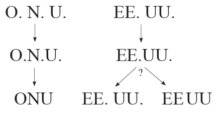

Las abreviaciones
Siglas, abreviaturas, símbolos...
Revisado: 2011-12-31
Las abreviaciones son una representación abreviada de una o varias palabras. Su finalidad es doble:
- Conveniencia del que escribe, pues se teclea menos en ciertas palabras que se repiten.
- Conveniencia del que lee. Las palabras se captan por bloques de letras y un lector medio viene a captar un máximo de cuatro letras, por lo que las abreviaturas que no pasan de este tamaño pueden identificarse rápidamente de forma visual.
Antiguamente tenían otros propósitos, como permitir el ahorro de materiales o ajustar las líneas, pero hoy tales usos han desaparecido por completo.
Normalmente, los análisis ortotipográficos se centran en el primero de los aspectos, mientras que el segundo se suele pasar por alto. Por ejemplo, se rechaza la abreviatura lib. para libro porque no se gana más que un carácter y por ello se propone pasar a l.
Pero no hay que olvidar la segunda faceta de las abreviaturas, y en bloques donde se concentra gran cantidad de información, como las bibliografías, el reconocimiento visual puede ser importante: l. es poco expresivo del significado (¿es libro o línea?) y libro ya se pasa en un carácter del límite de cuatro; en cambio lib. se distingue claramente y se diferencia de lín., y por ello funciona muy bien como poste visual fácilmente reconocible.
De forma parecida, es más expresivo dejar abierta una enumeración con etc., un marcador visual rotundo por su concisión, que con etcétera. En cualquier caso, no parece que tenga mucho sentido que lo mismo unas veces se escriba de una manera y otras de otra en un único texto, como a menudo se propone con etc./etcétera.
Hace tan solo unos pocos decenios, la situación sobre las abreviaciones era más o menos clara: teníamos abreviaturas y abreviaturas comerciales. Dentro de las primeras se podían englobar las siglas, pues no tenían tratamiento especial: igual se escribía s. e. u o. y O. N. U., que VV. AA.
En la actualidad las abreviaturas se han especializado y se clasifican en dos grupos básicos, de fronteras algo difusas: abreviaturas (y dentro de estas las abreviaturas comerciales) y siglas (y dentro de estas los acrónimos). Estos son los grupos esenciales, pero igualmente se pueden encontrar, en función del autor, literaciones, sigloides, siglónimos, inicialismos y otras categorías, de fronteras aún más imprecisas; el panorama no puede ser más confuso, porque las clasificaciones varían de un autor a otro y a menudo se mezcla los métodos de formar las abreviaciones con la forma de leerlas y con su valor textual. Es más, si lo pensamos detenidamente, esas clasificaciones lejos de aclarar la situación la hacen aún más compleja.
Otra categoría adicional son los símbolos, que a menudo se definen como «abreviaturas técnicas sin punto y normalizadas». No es una definición muy apropiada, porque los símbolos son más bien representaciones (gráficas o textuales) de conceptos, que a menudo se pueden combinar con cifras u otros símbolos para formar expresiones según ciertas reglas establecidas, ya sea por tradición, ya sea por convenios internacionales, nacionales, locales o personales. Estas reglas pueden llegar a ser muy complejas y específicas y por tanto su asimilación a las abreviaciones es dudosa y deberían quedar fuera de una regulación lingüística. (Uno de los aciertos de la Ortografía académica del 2010 es reconocer que los símbolos no son realmente abreviaciones.)
La sigla es un tipo especial de abreviatura, sin que esté claro en qué se diferencia una de otra. Originalmente, las siglas (o lo que ahora entendemos por siglas) eran básicamente abreviaturas de nombres propios, por lo que se componían con mayúsculas.
Como no siempre eran pronunciables y había que deletrearlas, se amplió la forma de crear siglas mediante los acrónimos, que no solo tomaban las primeras letras de cada palabra sino también alguna más intermedia para poder formar algo pronunciable: así, en lugar de RNFE tenemos Renfe. Aunque se suele caracterizar el acrónimo por la inclusión letras intermedias, en realidad su razón de ser es permitir la lectura oral; así se define en francés e inglés y así debería definirse en español.
Por razones tipográficas, en las siglas se abandonaron los espacios y los puntos, pero no ocurrió lo mismo con otras abreviaturas que se componían igualmente con mayúsculas y que por tanto presentaban el mismo problema.
Actualmente las siglas no se limitan a los nombres propios, sino que también puede expresar un concepto; también es método para formar neologismos, en lo que se ha mostrado extremadamente productivo: ovni, láser, opa, sida… Es un sistema muy conveniente para el lector, que puede captar un concepto en la lectura de una vez, sin necesidad de tener que leer un sintagma completo y a menudo largo (lo cual no justifica el abuso que se hace de ellas).
Las abreviaturas suelen formar el plural añadiendo s o es: Dirs., núms., Dres. Las de una letra lo pueden formar duplicando la letra: pp. Eso se ha aplicado a algunas siglas (en el sentido original del término), como CC. OO., lo que hoy crea incoherencias en el sistema (compárese EE. UU. con URSS), con un híbrido entre sigla y abreviatura que parece difícil de justificar; la tradición tampoco vale porque estamos tratando con fenómenos ortotipograficos nuevos. Puesto que la evolución de las siglas fue sobre todo por motivos gráficos, no parece razonable excluir este caso del proceso y algunos medios de comunicación ya lo han puesto en práctica: EEUU, CCOO, AAPPAA (con espacios finos entre cada bloque, que en una página web no se pueden reproducir).

La formación del plural con duplicación viene a ser una especie de cultismo, como prueba el que muy a menudo se vean usados en singular (una BBDD es una base de datos, la CCAA de Madrid es una comunidad autónoma) y las incoherencias en su aplicación (BD para base de datos, con plural BBDD, APA para asociación de padres de alumnos con plural AAPPAA). En cierto modo, se podría decir que no es realmente productivo y que solo permanecen de verdad los casos ya establecidos como RR. CC., AA. VV. o, un tanto atípicamente, FF. CC. (ferrocarriles, con F duplicada aunque ferro- no varía). Por otra parte, parece que solo funciona bien cuando son dos o tres letras.
En los últimos años las abreviaturas y las siglas han dado un giro copernicano y es tiempo de reconsiderar las reglas. Yo escribo CDs y TVs, pues me parece un plural gráfico conciso, díafano, legible y reconocible, que se corresponde con su plural fonético y semántico. El hecho de que a los ingleses se les haya ocurrido antes no es razón suficiente para rechazarlo, y mucho menos para preferir un evidente galicismo. Más bien al contrario, en español las abreviaturas han tenido siempre plural.
La regla académica, que cada cual juzgará, es que las siglas, como en el francés, son invariables en su forma escrita (en francés, al contrario que en español, también son invariables en la forma oral). ¿Cómo saber si un cartel que dice «PC de oferta» se refiere a uno o a varios? ¿Y «congreso de ONG»? Una norma ortográfica no debe ser obstáculo a la comunicación: si por una norma ortográfica se resiente la capacidad de transmitir información, esa norma hay que revisarla, y si no se revisa, simplemente no hay que seguirla, porque por encima de las normas están las necesidades de comunicación.
Más…
- Uso de las minúsculas y mayúsculas
- Siglas: ¿versal o versalita?
- Siglas bibliográficas
- Cursivas, negritas, versalitas…
- Breves: símbolos frente a abreviaturas
- La economía ortotipográfica en las bibliografías
- La Ortografía académica del 2010
- Las notaciones científicas en la Ortografía académica
- Raya, menos y guion
- ¿Es DNA un símbolo internacional?
- El símbolo de división